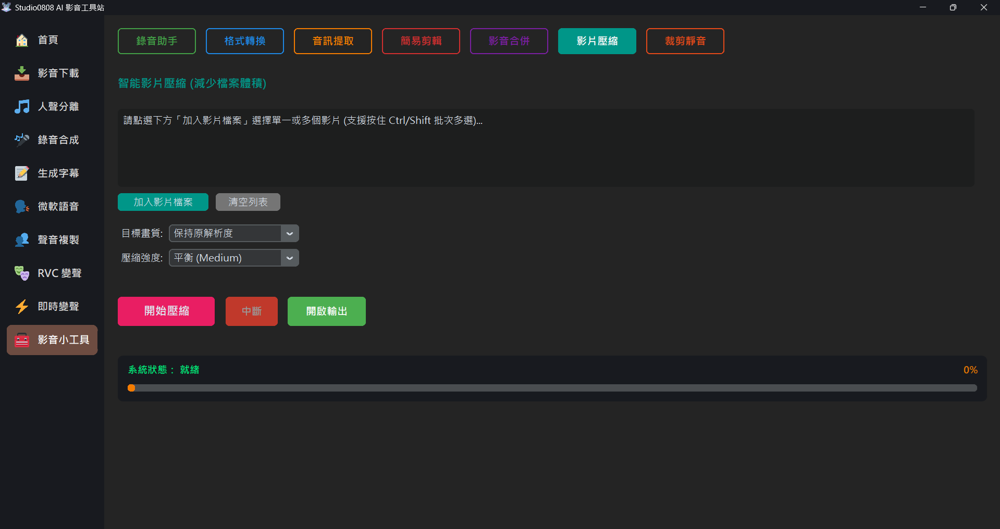

智能影片壓縮 (Video Compressor) 是一個高效的影片瘦身工具。當您的影片檔案太大，無法上傳至社群平台，或是佔用過多硬碟空間時，這個工具可以幫助您在肉眼幾乎看不出差異的情況下，大幅度縮減檔案體積。
本模組底層採用業界標準的 FFmpeg x264 CRF (Constant Rate Factor) 編碼算法，能在檔案大小與畫質之間取得完美的平衡。
💡 批次處理支援：您可以在選擇檔案時框選或按住 Ctrl / Shift 來一次加入多個影片，系統將會一鍵自動排隊壓縮。
A: 如果您原本的影片已經被平台 (如 Facebook 或 LINE) 嚴重壓縮過，而您選擇了「高品質」進行重新編碼，工具可能會試圖用更多的資料量來描述已經模糊的畫面，導致檔案變大。遇到這種情況，您可以嘗試降低壓縮強度，或是不需要特別處理這支影片。
A: 這取決於影片的長度、目標解析度以及您的電腦 CPU 效能。智能壓縮屬於計算密集型的任務，建議在電腦閒置時進行批次處理。